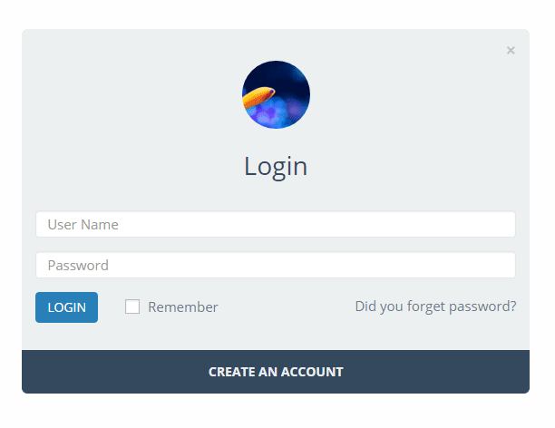

“Modal Login” Documentation by “Z Plugins” v1.0.4
“Modal Login”
Created: 10/2/2016
By: Z Plugins
Web: www.plugins.zeasite.com
Email: zea726@gmail.com
Thank you for purchasing my plugin. If you have any questions that are beyond the scope of this help file, please feel free to email via my user page contact login here. Thank you so much!
Table of Contents
- Active the Plugins
- How To Use
-
Settings
- Change Colors Of Different Section
- Change Text Of Different Section
- Change Header and Background Image
- Change Background Opacity, Form Opacity, Form Corner, Form Transparency & Load default color
- Change Preset Colors
- How To Change The Template
- How To Login and Logout Redirect after login and logout
- Login, Register, Forgot Password Section
- Google Re-Captcha Settings
- Preview
- Save The Temaplate
- How To Use [Short Code ]
A) Active the Plugins - top
Uploading in WordPress Dashboard
1. Download `modal-login.zip`2. Navigate to the 'Add New' in the plugins dashboard
3. Navigate to the 'Upload' area
4. Select `modal-login.zip` from your computer
5. Click 'Install Now'
6. Activate the plugin in the Plugin dashboard
Using FTP
1. Download `modal-login.zip`2. Extract the `modal-login` directory to your computer
3. Upload the `modal-login` directory to the `/wp-content/plugins/` directory
4. Activate the plugin in the Plugin dashboard
The WordPress codex contains [instructions on how to install a WordPress
plugin](http://codex.wordpress.org/Managing_Plugins#Manual_Plugin_Installation).
B) How to Use - top
After Activation the Plugin is Ready to Use.C) Settings - top
For settings just go to the Modal Login section from left menu. If you go to the plugin settings they are almost self explanatory, yet you can see bellow features customization options as example
Change Colors Of Different Section - top
Customizable all section text background color, text color (unlimited colors). You can find it just right side of the template. Click on the color box just besides the color number for any designated place or text that you want to change and you will find a color palate for changing the color like below. Select the color as you wish and it will change the color of that section in the form.Color choosing palate after click
Change Text Of Different Section - top
You can change the text of the designated section. For instance, if you want to change the header title text from "Login" to "Sign In" just go to the login title section which is just bellow the form section and change it. It will automatically change the form header title.Change Header and Background Image - top
You can also set the header image and background image. You can find options to upload a header and background image just bellow the color changing section. As soon as you upload the image of header there will be an option beside the thumb of the image to make it round or square. For background image the opacty option will be on modal settings section just bellow the image upload section.
After uploading the image the form will look like this.

Change Background Opacity, Form Opacity, Form Corner and Form Transparency & Load default color- top
To change the background opacity (transparency), form opacity (transparency), form corner shape (round or square) or form Transparency you need to go to the modal settings section which is just bellow the image upload section. By background opacity the background will be dim. Same thing goes for "Form Opacity" which makes the form transparent with the settings level. To do this you need to press yes in "Form Transparency". A switch will appear just below this option to change the transparent level. Lower the level it will be more transparent. The scale is from 1 to 10. By the form corner strait or round the corners of the form will be straight or curved. Load default color is the color which comes with original template color. We gave this feature because users sometimes want to load the default color and change it to their wish, you can also load the last saved value by swipe to saved color.Change Preset Colors - top
Currently we have 4 preset colors. You can choose any of them to change the form colors. If you want default color just go to the modal settings section and load default and for saved color press or swipe to saved color. This has also been explained in previous section.How To Login and Logout Redirect after login and logout- top
To redirect after login and logout you need to fill the full path in the login text change section titled "Redirect URL After Login" for login and "Redirect URL After Logout" for logout. Remember to set the full path (with domain name).How To Change The Template - top
You can choose any layout from 4 Layout templates. If you just scroll bellow the modal loging page you will see 4 templates as the image bellow. Select any of the templates by clicking the radio button.Login, Register, Forgot Password Section - top
The Register and forgot password section is situated in the tab Registration Form and Forgot Password Form. Click on them and customize them as you need, as like the login form.Google Re-captcha - top
Enable the recaptcha by presseing yes in Google reCAPTCHA Seetings section. You need to put the google re captcha site and secreet key over there. To make the google re-captcha work you need to get the captcha secret and site key from google. Its very easy. Just follow the Link. You also need to set in which form you want to set the captcha.Preview - top
Press on "Preview" or "See How I Look Like" to see the preview.Save the template - top
Just press the save button after changing any or all settings to make it works. That's all. After saving the form it should look like this sample bellow.D) Short Code | PHP Code - top
you can use short code if you want to.
For Login and logout with text.
[loging_modal_login_shortcode login_text="Log Me In" logout_text="Log Me Out"] or
PHP Code <?php
echo do_shortcode('[loging_modal_login_shortcode login_text="Log Me In" logout_text="Log Me Out"]');
?> . Change the text "Log Me In" or "Log Me Out" if necessary. You can also omit the whole phrase and then it should look like this : [loging_modal_login_shortcode]
For Register use the bellow shortcode
[loging_modal_register_shortcode register_text="Register Me"] or
PHP Code <?php
echo do_shortcode('[loging_modal_register_shortcode register_text="Register Me"]');
?> .
Change the text "Register Me" as necessary or omit. You can use it simply by [loging_modal_register_shortcode]
For forgot password use the bellow shortcode
[loging_modal_forget_shortcode forget_text="Forgot Me"] or
PHP Code <?php
echo do_shortcode('[loging_modal_forget_shortcode forget_text="Forgot Me"]');
?> .
Change the text "Forgot Me" as necessary or omit. You can also use it like [loging_modal_forget_shortcode] or
PHP Code
The Short Code is on settings page. Copy the short code and paste it in post or pages in text mode. If you want to show it in a custom place you need to use the short code, place it as necessary.